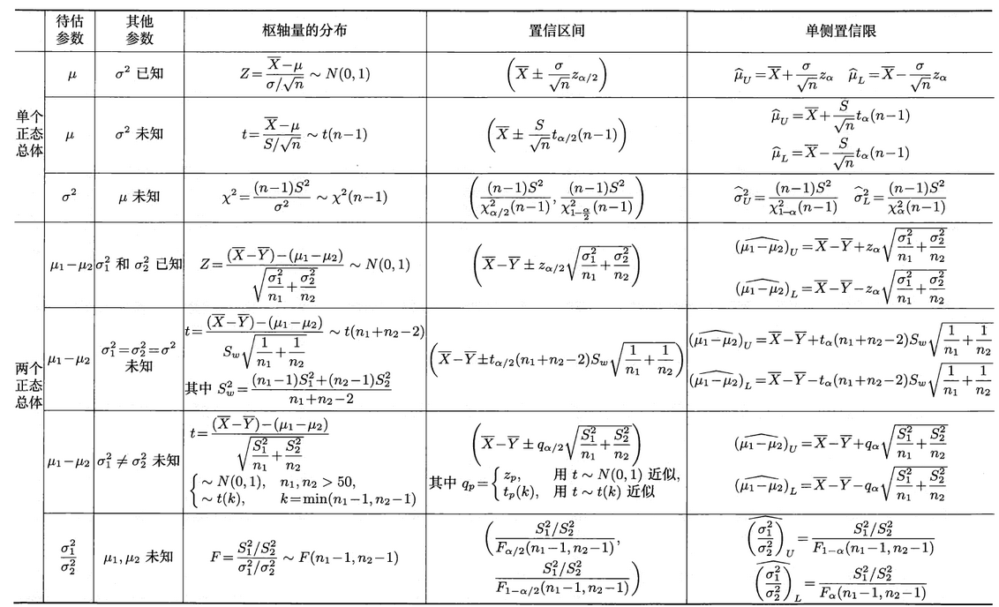

第 7 章 参数估计
约 2271 个字 1 张图片 预计阅读时间 15 分钟
点估计
设总体 \(X\) 的分布函数为 \(F(x; \theta)\)，\(\theta\) 是待估参数，\(X_1, X_2, \dots, X_n\) 是 \(X\) 的一个样本。点估计问题就是要构造一个适当的统计量 \(\hat{\theta}(X_1, X_2, \dots, X_n)\)，用来估计参数 \(\theta\)。
- 此时称 \(\hat{\theta}(X_1, X_2, \dots, X_n)\) 为 \(\theta\) 的（点）估计量
- 若用样本值 \(x_1, x_2, \dots, x_n\) 代替样本，称 \(\hat{\theta}(x_1, x_2, \dots, x_n)\) 为 \(\theta\) 的估计值
- 估计量和估计值统称为估计，简记为 \(\hat{\theta}\)
两种常用的点估计方法：矩法、极大似然法。
矩法
当样本容量 \(n \rightarrow +\infty\) 时，样本矩依概率收敛于相应的总体矩，即：
其中 \(A_k, B_k\) 分别为样本的 \(k\) 阶原点矩和 \(k\) 阶中心矩，\(\mu_k, v_k\) 分别为总体的 \(k\) 阶原点矩和 \(k\) 阶中心矩。因此，矩法的统计思想是：用样本矩（的函数）作为相应总体矩（同一函数）的估计。
基本步骤如下：
设 \(\theta_1, \theta_2, \dots, \theta_m\) 是总体 \(X\) 的待估参数，并假定 \(X\) 的前 \(m(m \ge 1)\) 阶矩存在。
-
求总体 \(X\) 的前 \(m\) 阶矩（不妨设为原点矩）\(\mu_1, \mu_2, \dots, \mu_m\)，一般地，这些矩可以写成待估参数 \(\theta_1, \theta_2, \dots, \theta_m\) 的函数形式，记为：
\[ \begin{cases} \mu_1 = E(X) = g_1(\theta_1, \theta_2, \dots, \theta_m), \\ \mu_2 = E(X^2) = g_2(\theta_1, \theta_2, \dots, \theta_m), \\ \dots \\ \mu_m = E(X^m) = g_m(\theta_1, \theta_2, \dots, \theta_m), \\ \end{cases} \] -
由上面的方程组，可求出各参数关于前 \(m\) 阶矩 \(\mu_1, \mu_2, \dots, \mu_m\) 的函数表达式：
\[ \theta_k = h_k(\mu_1, \mu_2, \dots, \mu_m), k = 1, 2, \dots, m \] -
根据矩法思想，以 \(A_i\) 代替 \(\mu_i, i = 1, 2, \dots, m\)，即可得各参数的估计量为：
\[ \widehat{\theta_k} = h_k(A_1, A_2, \dots, A_m), k = 1, 2, \dots, m \]称 \(\widehat{\theta_k}\) 为参数 \(\theta_k\) 的矩估计量（\(k = 1, 2, \dots, m\)）
注
- 就个人的做题经验而言，大多数情况下待估参数只有一个，因此只需根据一阶原点矩，即期望列方程即可
- 在上面的不等式组中，可以用部分总体中心矩 \(v_i\) 代替原点矩 \(\mu_i\)，此时在步骤 3 中以相应的样本矩 \(B_i\) 代替 \(v_i\) 即可
- 矩估计没有涉及总体是正态分布的信息
- 当样本容量趋于无穷大时，矩估计量依概率收敛于相应的参数，通常称这种估计量为参数的相合估计
- 当总体的分布未知，但知道待估参数关于总体各阶矩的函数形式时，便可求出该参数的矩估计
- 缺点：在总体分布已知时，没有充分利用总体分布所提供的信息，矩估计量不具有唯一性
极大似然法
基本思想：设某事件 \(A\) 发生的概率依赖于待估参数 \(\theta\)，如果观察到 \(A\) 已发生，那么就使取得事件 \(A\) 发生的概率达到最大的 \(\theta\) 值作为 \(\theta\) 的估计。
设 \(X\) 为离散型总体，其概率分布律为 \(P(X = x) = p(x; \theta)\)，\(\theta \in \Theta\) 是未知的待估参数，\(\Theta\) 为参数可取值的范围。\(X_1, X_2, \dots, X_n\) 是来自总体 \(X\) 的样本，并设 \(x_1, x_2, \dots, x_n\) 是已经得到的样本值，则样本 \(X_1, X_2, \dots, X_n\) 取到样本值 \(x_1, x_2, \dots, x_n\) 的概率为：
将其记为似然函数\(L(\theta)\)：
形式上，\(L(\theta)\) 与样本联合分布律 \(p(x_1, x_2, \dots, x_n ; \theta)\) 相同，但，
- \(L(\theta)\) 是样本值给定时关于 \(\theta\) 的函数
- \(p(x_1, x_2, \dots, x_n ; \theta)\) 是参数给定时关于样本值的函数
基于上述思想，应选取 \(\theta\) 的估计值 \(\hat{\theta}\)，使得 \(L(\theta)\) 取到最大，于是 \(\hat{\theta}\) 满足：
由此获得的 \(\hat{\theta} = \hat{\theta}(x_1, x_2, \dots, x_n)\) 称为参数 \(\theta\) 的极大似然估计值，相应的统计量 \(\hat{\theta}(X_1, X_2, \dots, X_n)\) 称为参数 \(\theta\) 的极大似然估计量。
设 \(X\) 为连续型总体，其密度函数为 \(f(x; \theta)\)，\(\theta \in \Theta\) 是未知的待估参数。\(X_1, X_2, \dots, X_n\) 是来自总体 \(X\) 的样本，并设 \(x_1, x_2, \dots, x_n\) 是已经得到的样本值，此时似然函数为：
形式上，\(L(\theta)\) 与样本联合密度函数 \(f(x_1, x_2, \dots, x_n ; \theta)\) 相同。
极大似然估计值和极大似然估计量的定义同离散型版本。寻求极大似然估计常用微分法，有：\(\dfrac{\text{d}L(\theta)}{\text{d}\theta} \Big|_{\theta = \hat{\theta}} = 0\)，称之为似然方程。
为了计算方便，往往对似然函数求对数，记 \(l(\theta) = \ln L(\theta)\) 为对数似然函数，此时似然方程等价为：\(\dfrac{\text{d}l(\theta)}{\text{d}\theta} \Big|_{\theta = \hat{\theta}} = 0\)，称为对数似然方程。
- 乘除式 -> 加减式，计算更加方便！
注
- 若总体分布含有多个待估参数，可将上文的 \(\theta\) 看成向量，此时需要对似然方程的每个参数求偏导数，建立含多个式子的似然方程
- 当似然方程的解不存在时，往往根据似然函数关于待估参数的单调性来求其极大似然估计
极大似然估计的不变性：设参数 \(\theta\) 的极大似然估计为 \(\hat{\theta}\)，\(\theta^* = g(\theta)\) 是 \(\theta\) 的连续函数，则参数 \(\theta^*\) 的极大似然估计为 \(\widehat{\theta^*} = g(\hat{\theta})\)
估计量的评价准则
无偏性准则
设 \(\theta \in \Theta\) 是总体 \(X\) 的待估参数，\(X_1, X_2, \dots, X_n\) 是来自总体 \(X\) 的样本。若估计量 \(\hat{\theta} = \hat{\theta}(X_1, X_2, \dots, X_n)\) 的数学期望存在，且满足：\(E(\hat{\theta}) = \theta, \theta \in \Theta\)，称 \(\hat{\theta}\) 是 \(\theta\) 的无偏估计量或无偏估计。
- 偏差：\(E(\hat{\theta}) - \theta\)（\(E(\hat{\theta}) \ne \theta\)）
- 渐近无偏估计：满足 \(\lim\limits_{n \rightarrow +\infty} E(\hat{\theta}) = \theta\)，但 \(E(\hat{\theta}) \ne \theta\)
有效性准则
设 \(\widehat{\theta_1} = \widehat{\theta_1}(x_1, x_2, \dots, x_n), \widehat{\theta_2} = \widehat{\theta_2}(x_1, x_2, \dots, x_n)\) 都是参数 \(\theta\) 的无偏估计，若 \(\forall \theta \in \Theta, Var_\theta(\widehat{\theta_1}) \le Var_\theta(\widehat{\theta_2})\)，且至少有一个 \(\theta \in \Theta\) 使不等号成立，则称 \(\widehat{\theta_1}\) 比 \(\widehat{\theta_2}\) 有效。
均方误差准则
设 \(\hat{\theta} = \hat{\theta}(X_1, X_2, \dots, X_n)\) 是总体参数 \(\theta\) 的估计量，称 \(E[(\hat{\theta} - \theta)^2]\) 是估计量 \(\hat{\theta}\) 的均方误差，记为 \(Mse(\hat{\theta})\)。
- \(Mse(\hat{\theta}) = E[(\hat{\theta} - \theta)^2] = Var(\hat{\theta}) + [E(\hat{\theta}) - \theta]^2\)
- 设 \(\widehat{\theta_1}, \widehat{\theta_2}\) 都是 \(\theta\) 的估计量，若 \(\forall \theta \in \Theta, Mse(\widehat{\theta_1}) \le Mse(\widehat{\theta_2})\)，则称在均方误差准则下，\(\widehat{\theta_1}\) 优于 \(\widehat{\theta_2}\)
- 均方误差准则常用于有偏估计之间，有偏估计与无偏估计之间的比较
- 若 \(\hat{\theta}\) 是参数 \(\theta\) 的无偏估计量，则 \(Mse(\hat{\theta}) = Var(\hat{\theta})\)，即均方误差准则在无偏估计之间的比较等价于有效性准则
- 在实际情况下，均方误差准则比无偏性准则更重要，即如果一个估计量虽然有偏，但其均方误差较小，有时比方差较大的无偏估计更有用
相合性准则
设 \(\widehat{\theta_n} = \hat{\theta}(X_1, X_2, \dots, X_n)\) 是总体参数 \(\theta\) 的估计量，若 \(\forall\ \varepsilon > 0\)，有：\(\lim\limits_{n \rightarrow +\infty}P(|\widehat{\theta_n} - \theta| < \varepsilon) = 1\)，即 \(\widehat{\theta_n}\) 依概率收敛于 \(\theta\)，称 \(\widehat{\theta_n}\) 是 \(\theta\) 的相合估计量，并记 \(\widehat{\theta_n} \stackrel{P}{\longrightarrow} \theta, n \rightarrow +\infty\)。
- 一般地，由矩法求得的参数估计量都满足相合性
- 对于极大似然估计，在总体分布满足一定条件下，求得的估计量也是待估参数的相合估计量
注
考得最多的是估计量的无偏性和相合性。
区间估计
置信区间
设总体为 \(X\)，\(\theta \in \Theta\) 为待估参数，\(X_1, X_2, \dots, X_n\) 是来自总体 \(X\) 的样本，统计量 \(\widehat{\theta_L} = \widehat{\theta_L}(X_1, X_2, \dots, X_n)\) 和 \(\widehat{\theta_U} = \widehat{\theta_U}(X_1, X_2, \dots, X_n)\) 满足 \(\widehat{\theta_L} < \widehat{\theta_U}\)，且对给定 \(\alpha \in (0, 1)\) 和任意 \(\theta \in \Theta\)，有：\(P(\widehat{\theta_L} < \theta < \widehat{\theta_U}) \ge 1 - \alpha\)，则
-
称随机区间 \((\widehat{\theta_L}, \widehat{\theta_U})\) 是参数 \(\theta\) 的置信水平为 \(1 - \alpha\) 的置信区间
- 置信区间是一个随机区间，对某次具体样本观测来说，有时包含 \(\theta\)，有时不包含 \(\theta\)，且包含 \(\theta\) 的可能性至少为 \(1 - \alpha\)
- 在实际应用中，通常取 \(\alpha = 0.1\) 或 \(0.05\)
-
\(\widehat{\theta_L}, \widehat{\theta_U}\) 分别称为 \(\theta\) 的置信水平是 \(1 - \alpha\) 的双侧置信下限和双侧置信上限
- 精确度：区间的平均长度 \(E(\widehat{\theta_U} - \widehat{\theta_L})\)
- 误差限：\(\dfrac{1}{2}E(\widehat{\theta_U} - \widehat{\theta_L})\)
- 奈曼原则：当样本容量给定时，置信水平和精确度是相互制约的。因此在保证置信水平达到一定的前提下，尽可能提高精确度。
- 当总体 \(X\) 是连续型随机变量时，对于给定置信水平 \(1 - \alpha\)，应使上面的不等式取等号，即 \(P(\widehat{\theta_L} < \theta < \widehat{\theta_U}) = 1 - \alpha\) 的随机区间 \((\widehat{\theta_L}, \widehat{\theta_U})\) 作为置信区间
- 当总体 \(X\) 是离散型随机变量时，则应选择使 \(P(\widehat{\theta_L} < \theta < \widehat{\theta_U}) = 1 - \alpha\) 且尽可能接近 \(1 - \alpha\) 的随机区间 \((\widehat{\theta_L}, \widehat{\theta_U})\) 作为置信区间
对于给定的 \(\alpha \in (0, 1)\)，如果统计量 \(\widehat{\theta_L}, \widehat{\theta_U}\) 满足：
那么分别称 \(\widehat{\theta_L}\) 和 \(\widehat{\theta_L}\) 是参数 \(\theta\) 的置信水平为 \(1 - \alpha\) 的单侧置信下限和单侧置信上限。
- 当总体 \(X\) 是连续型随机变量时，应选择 \(\widehat{\theta_L}, \widehat{\theta_U}\) 使：\(P(\widehat{\theta_L} < \theta) = P(\theta < \widehat{\theta_U}) = 1 - \alpha, \theta \in \Theta\)
- 设统计量 \(\widehat{\theta_L}, \widehat{\theta_U}\) 分别是参数 \(\theta\) 的置信水平为 \(1 - \alpha_1, 1 - \alpha_2\) 的单侧置信下限和单侧置信上限，且 \(\widehat{\theta_L} < \widehat{\theta_U}\)，那么 \((\widehat{\theta_L}, \widehat{\theta_U})\) 是 \(\theta\) 置信水平为 \(1 - \alpha_1 - \alpha_2\) 的置信区间。
枢轴量法
设总体 \(X\) 的密度函数（或概率分布律）为 \(f(x;\theta)\)，其中 \(\theta\) 为待估参数，并设 \(X_1, X_2, \dots, X_n\) 是来自总体 \(X\) 的样本，如果样本和参数 \(\theta\) 的函数 \(G(X_1, X_2, \dots, X_n; \theta)\) 的分布完全已知，且形式上不依赖于其他未知参数，那么称 \(G(X_1, X_2, \dots, X_n; \theta)\) 为枢轴量。
寻找 \(\theta\) 的置信区间的步骤：
- 构造一个分布已知的枢轴量 \(G(X_1, X_2, \dots, X_n; \theta)\)
-
当总体 \(X\) 是
- 连续型随机变量时，对给定的置信水平 \(1 - \alpha\)，根据枢轴量 \(G(X_1, X_2, \dots, X_n; \theta)\) 的分布，适当地选择两个常数 \(a, b\)，使：
\[ P_\theta (a < G(X_1, X_2, \dots, X_n; \theta) < b) = 1 - \alpha \]- 离散型随机变量时，对给定的置信水平 \(1 - \alpha\)，选择常数 \(a, b\) 满足：
\[ P_\theta (a < G(X_1, X_2, \dots, X_n; \theta) < b) \ge 1 - \alpha \text{ and be close to } 1- \alpha \text{ as much as possible} \] -
假如参数可以从 \(G(X_1, X_2, \dots, X_n; \theta)\) 中分离出来，不等式 \(a < G(X_1, X_2, \dots, X_n; \theta) < b\) 可以等价地转化为 \(\widehat{\theta_L} < \theta < \widehat{\theta_U}\)
- 对于连续型总体：
\[ P(\widehat{\theta_L} < \theta < \widehat{\theta_U}) = 1 - \alpha \]- 对于离散型总体：
\[ P(\widehat{\theta_L} < \theta < \widehat{\theta_U}) \ge 1 - \alpha \text{ and be close to } 1 - \alpha \text{ as much as possible} \]表明 \((\widehat{\theta_L}, \widehat{\theta_U})\) 是 \(\theta\) 的置信水平为 \(1 - \alpha\) 的置信区间
注
对于步骤 2，满足式子的常数 \(a, b\) 的解是不唯一的。根据奈曼原则，应选择使置信区间 \((\widehat{\theta_L}, \widehat{\theta_U})\) 的平均长度达到最短的 \(a, b\)，习惯上取 \(a, b\) 满足：
关于枢轴量的结论
- 双侧置信区间：\(g_{1 - \frac{\alpha}{2}}(n) < G(\theta) < g_{\frac{\alpha}{2}}(n)\)
- 单侧置信上限：\(G(\theta) > g_{1 - \alpha}(n)\)
- 单侧置信下限：\(G(\theta) < g_\alpha(n)\)
其中 \(g_\alpha(n)\) 代表分位数
正态总体参数的区间估计
打 LaTeX 公式太累了，所以下面就直接贴上课本给的表格，公式都是整理好的：

提示
记住不同情况下的枢轴量的分布，以及上面置信区间的结论，我们就可以较为容易地推导出对应的置信区间，无需再额外记忆一堆置信区间的公式了，减轻记忆压力。
注意
表格中“两个正态总体方差不等且未知时，求均值差的区间估计”（即表格第 6 行（不包括表头行
非正态总体参数的区间估计
注意
这块内容不考！！！
0-1 分布参数的区间估计
设总体 \(X\) 服从 0-1 分布分布 \(B(1, p), X_1, X_2, \dots, X_n\) 是来自总体 \(X\) 的样本，当 \(n\) 充分大时，由中心极限定理知：
近似服从标准正态分布 \(N(0, 1)\)，于是有：
等价于：
求一元二次方程，可得参数 \(p\) 的置信水平为 \(1 - \alpha\) 的近似置信区间为：
其中 \(a = n + z_{\alpha / 2}^2, b = -(2n\overline{X} + z_{\alpha / 2}^2), c = n\overline{X}^2\)，取 \(p(1-p)\) 的估计量为 \(\overline{X}(1 - \overline{X})\)，得参数 \(p\) 的置信水平为 \(1 - \alpha\) 的近似置信区间为：
在实际应用中，通常要满足 \(n > 30\) 且 \(np > 5, n(1-p) > 5\)
其他均值分布 \(\mu\) 的区间估计
设总体 \(X\) 的均值为 \(\mu\), 方差为 \(\sigma^2\)，\(X_1, X_2, \dots, X_n\) 是来自总体 \(X\) 的样本，当 \(n\) 充分大时（\(n > 50\)
故 \(\mu\) 的置信水平为 \(1-\alpha\) 的近似置信区间为：\((\overline{X} \pm \dfrac{\sigma}{\sqrt{n}}z_{\alpha / 2})\)。如果方差未知，可用估计量 \(S^2\) 代替 \(\sigma^2\)。
注
当样本容量 \(n \le 50\) 时，\(t\) 分布具有良好的统计稳健性，即当总体 \(X\) 不服从正态分布，但样本数据基本对称时，枢轴量 \(\dfrac{\overline{X} - \mu}{S / \sqrt{n}}\) 仍可以看成近似服从分布 \(t(n - 1)\)，从而均值 \(\mu\) 的置信水平为 \(1-\alpha\) 的近似置信区间为：\((\overline{X} \pm \dfrac{S}{\sqrt{n}}t_{\alpha / 2}(n - 1))\)